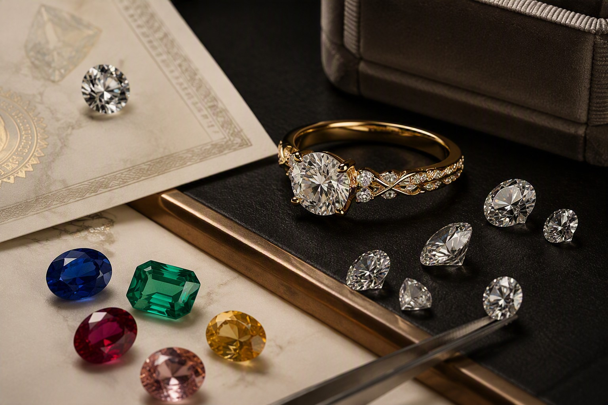
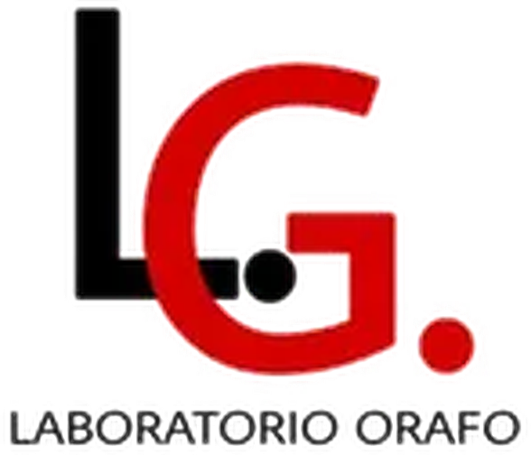
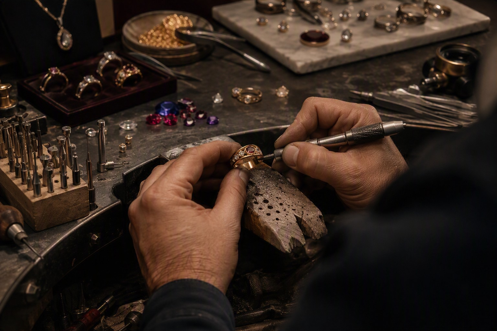
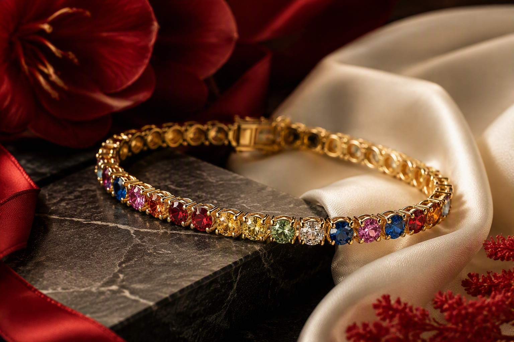
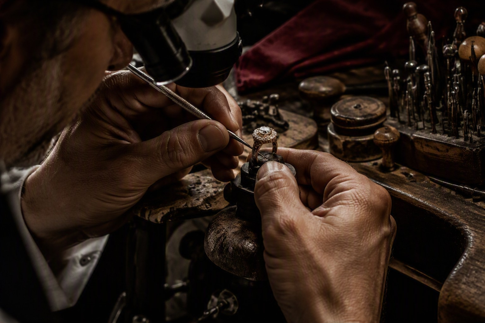
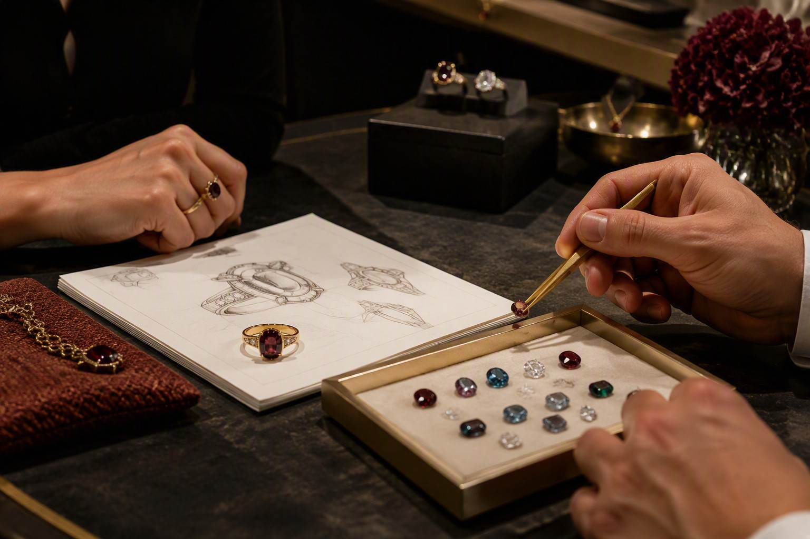
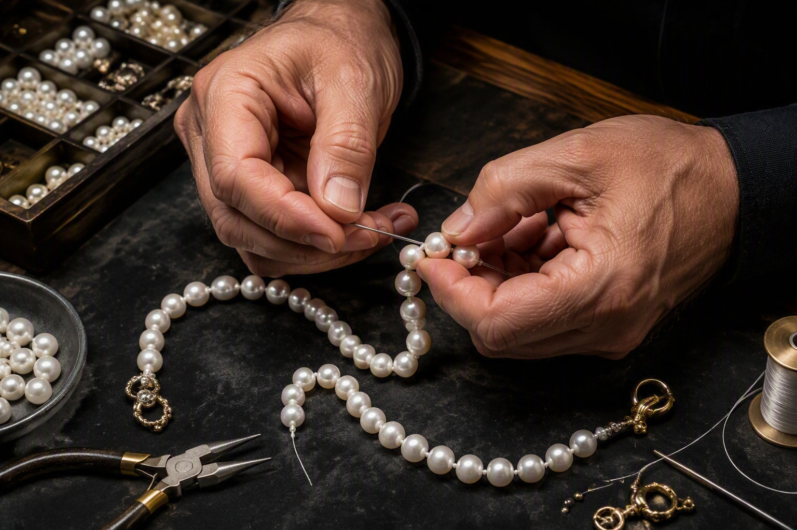
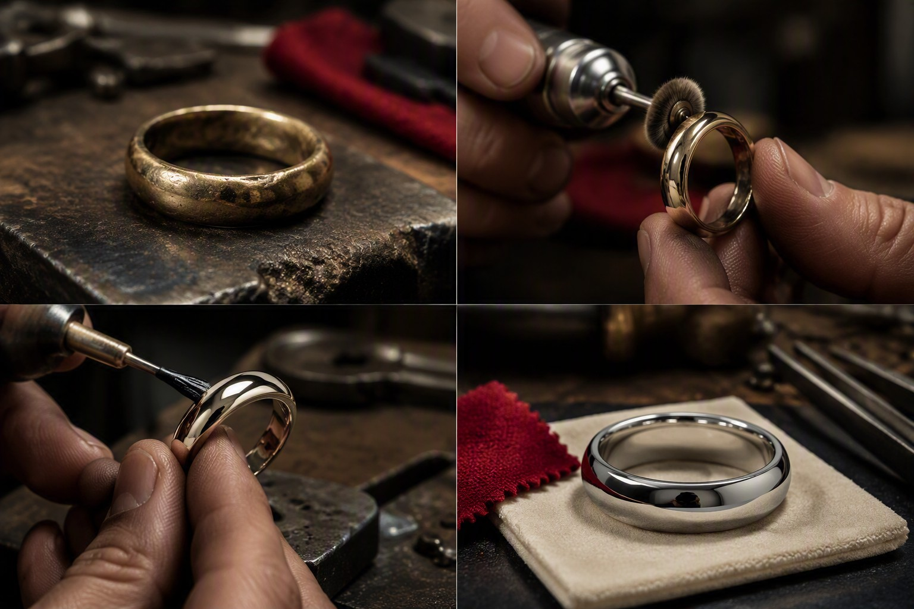
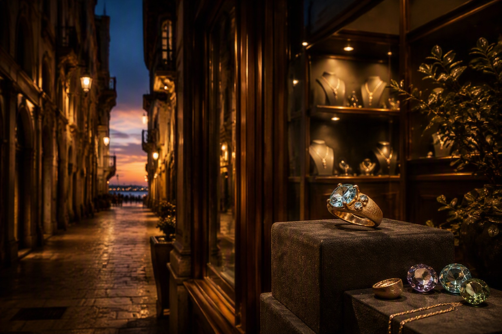

GIOIELLI PERSONALIZZATI

CHIAMACI
GIOIELLERIA E LABORATORIO ORAFO · TRIESTE
L.G. LABORATORIO ORAFO
Giovanni Lo Giudice nasce a Valenza, frequenta l’istituto orafo della Regione Piemonte e apprende le tecniche di oreficeria e incastonatura nei laboratori valenzani dal 1975.
Nel 2006 si trasferisce a Trieste e apre il laboratorio orafo e di incastonatura in Via Giulia 7/A.
VIENI IN LABORATORIO
CREAZIONI UNICHE




IL LABORATORIO
DIAMANTI E PIETRE
Il laboratorio è punto vendita di diamanti certificati e pietre preziose con certificato di garanzia. Su appuntamento, l’incastonatura di pietre di valore può essere eseguita in presenza del cliente.
FISSA UN APPUNTAMENTO
INCastonATURA

VIA GIULIA · TRIESTE